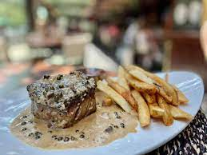

Joe Beef Steak au Poivre

Description
I like to call this recipe "gourmet animal style" steak
Ingredients
- 1 steak, prepared to your liking
- 1 tablespoon black or green peppercorns crushed between whole and powder
- Salt
- 2 tablespoons canola oil
- 2 tablespoons unsalted butter
- 1 tablespoon shallot, chopped
- 2 tablespoons Dijon mustard
- 1 tablespoon brined green peppercorns, patted dry
- 2 tablespoons cognac
- 1/2 cup beef stock
- 1/4 cup whipping cream
- Fries for serving on the side, or something healthier if that's your thing
Steps
- Prepare steak to your liking (as long as it uses the dried, black or green peppercorns) in a pan using the canola oil
- Set steak aside and pour off fat from pan
- Put pan over medium heat and add butter and shallots, sweating the shallots for 4-5 minutes until transparent
- Add mustard, cognac, and brined peppercorns and mix for 30 seconds
- Add the stock and reduce until nearly syrupy, at least 2 minutes
- Add cream and mix until well combined. Reduce for a further 2 minutes
- Pour source over steak and serve with fries or another side of your choosing